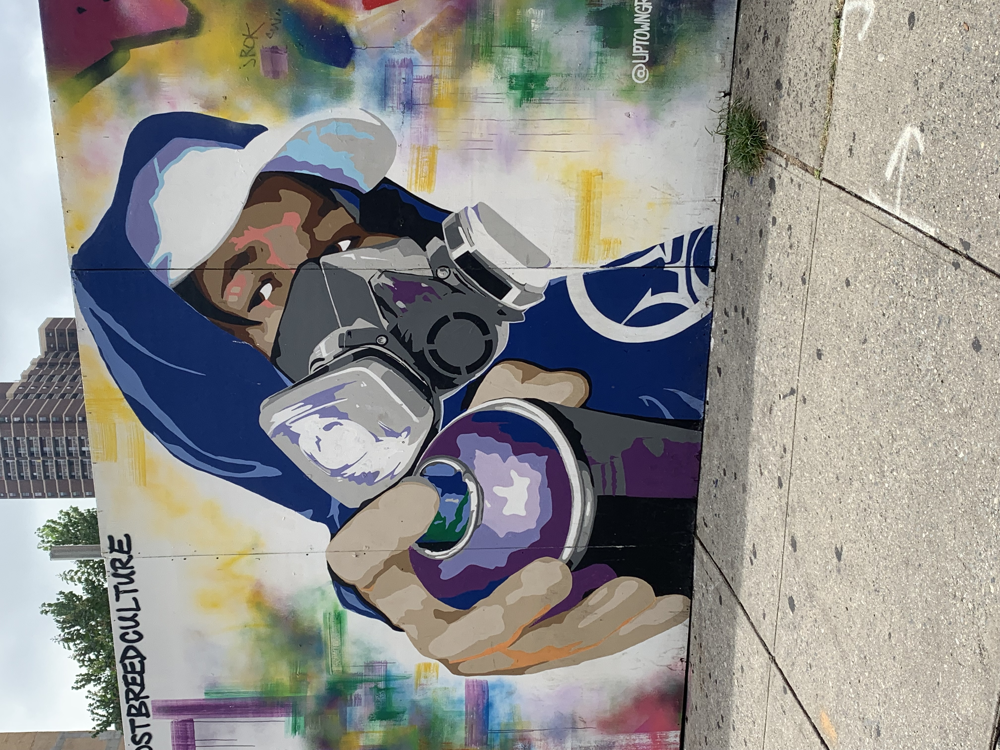
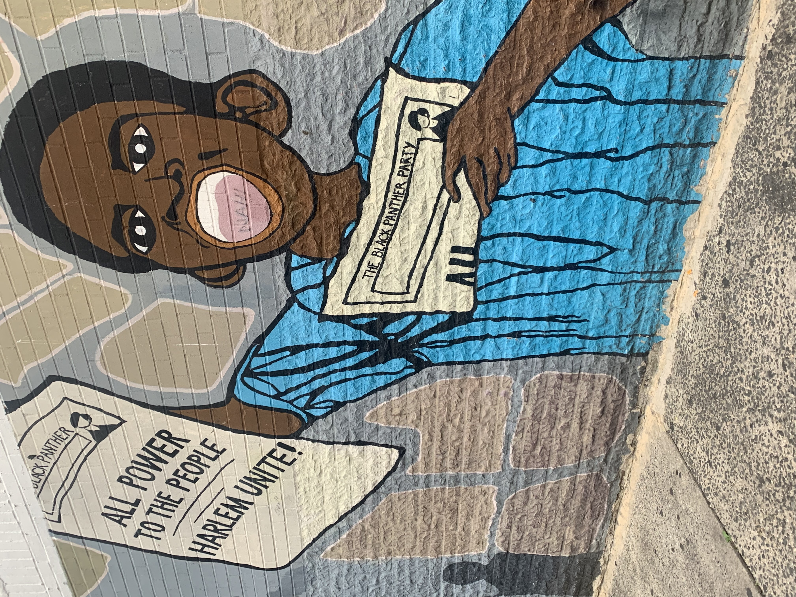

This image demonstrates the hope that the natives have Harlem.

This image shows the artisty and talent that Harlem natives have and Graffti was started by the
African American community.

This image demonstrates the power and the history that the Black community had in Harlem. Black
Panthers branch in Harlem was the first to be formed outside of the original branch in California.
The Black Panthers were given power to the community by providing black centered education, health programs,
and housing programs. The Black Panthers started the free lunch program that we all know of today if you
attended a
a public school. The Black Panthers in Harlem were active from 1969 to 1970.
History of Gentrification in Harlem
Harlem has a rich history which started when African Americans started migrated north from the south. This will
lead to what we now know as the
Harlem Renissance. The Black community flourished during this time with music, poetry, literature, dance, art,
fashion,
theatre, and politics. For Instance, Malcolm X gave his speeches of Civil Rights in Harlem. In Harlem Apollo,
you had acts like
Ella Fitzgerals and Louis Armstrong. With community like this, how could it get gentrified.
During the late 80s and early 90s, Harlem was percieved as a poor area. Harlem had bad policing that stemed from
racism, poor educational systems,
poor healthcare, and increase of the population in unemployment. In the early 1990s, Harlem slowly came back to
redevelopment which lead to crimes in the area
decreasing, better transportation services which influenced other people to live in Harlem. Due to Harlem
improving, the prices of residence started to go up.
Landlords started to find ways to increase the rent on their tenants. When the rent is controlled, the apartment
would cost about $1000. While non-controlled rent
can have the apartment costing $5000 a month. During 2000 to 2005, 32,000 African Americans moved out of Harlem
because of the rent increase alone. During this time, 22,000
White, Latinx and Asians moved in as residents.